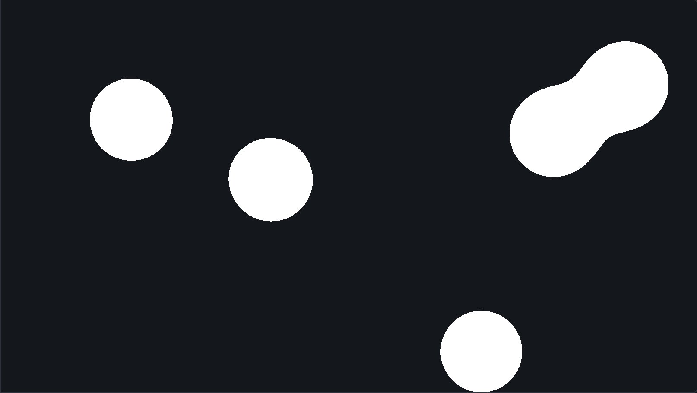
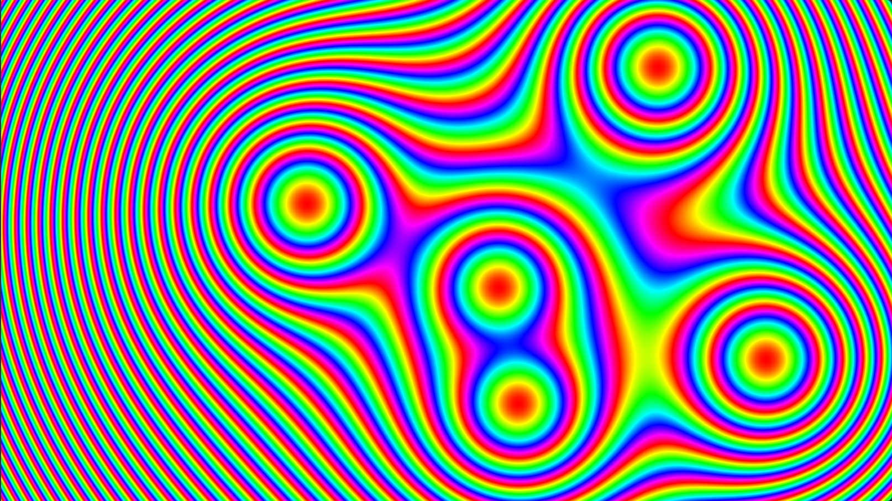

Kapitel 2
Metabälle
# Ein Bild als Funktion
Bisher hat ein Fragment-Shader ein vorhandenes Bild verändert. Er kann ein Bild aber auch ganz neu berechnen: Jedes Pixel bekommt eine Farbe, die nur von seiner Position abhängt. So stellt Kapitel 2 unter 2D-Funktionsplots Funktionen mit zwei Variablen dar: Jedes Pixel steht für einen Punkt der Ebene, und der Funktionswert an diesem Punkt bestimmt seine Farbe.
Die Bälle auf dieser Seite haben Positionen und Radien in Einheiten der Höhe der Canvas: läuft von 0 am oberen bis 1 am unteren Rand, und hat dieselbe Einheit, so dass ein Kreis auf jeder Canvas rund bleibt. uv läuft dagegen in beide Richtungen von 0 bis 1. Das Uniform size enthält die Größe der Canvas in Pixeln.
# Viele Bälle
Erst mit mehreren Bällen entsteht der Effekt der Metabälle: Nähern sich zwei Bälle, beulen sie sich zueinander aus und fließen zusammen, bevor sich ihre Kreise berühren, und lösen sich wieder voneinander wie zwei Tropfen. Dafür werden an jedem Punkt die Einflüsse aller Bälle zu einem einzigen Wert kombiniert, der dann mit verglichen wird. Alle Bälle der Demos haben den Radius .
Aufgabe 1: Metabälle
Die Bälle stehen im Uniform balls: balls[k].xy ist der Mittelpunkt und balls[k].z der Radius von Ball , und count gibt an, wie viele Bälle es gibt.
Schreibe in metaballs.frag (src/metaballs/metaballs.frag) die Funktion field, die die Einflüsse aller Bälle an einer Position zu kombiniert, und benutze sie in main wie in der vorigen Aufgabe.
- Kombiniere die Einflüsse einmal mit dem Maximum und einmal mit der Summe. Bei welcher Kombination fließen zwei Bälle zusammen, bevor sich ihre Kreise berühren?
- Halte die Bälle mit Geschwindigkeit 0 an, wenn ihre Mittelpunkte etwa eineinhalb Durchmesser voneinander entfernt sind, und erhöhe langsam, bis sie sich verbinden.
- Welcher Schwellwert ergibt bei dasselbe Bild wie bei ? Prüfe mit Geschwindigkeit 0.
Mögliche Lösung anzeigen

# Psychedelisch
Statt nur innen und außen zu unterscheiden, kann man auch über die Farbe zeigen. Die 2D-Funktionsplots in Kapitel 2 nennen das Farbkodierung: Ein Farbschema bildet den Funktionswert eines Pixels auf eine Farbe ab. Es kann zum Beispiel Bereiche von Werten mit verschiedenen Farben unterscheiden, zwischen Farben interpolieren oder einen Wert auf Graustufen abbilden.
Eine Farbe ist ein Punkt in einem Farbmodell und wird durch drei Koordinaten beschrieben (Kapitel 2, Farbmodell und Farbraum). Ein Farbschema legt fest, welche Koordinaten sich mit dem Wert ändern und welche fest bleiben. Welche Farbfolge dabei entsteht, hängt davon ab, in welchem Farbmodell man das tut.
Vor deinem Code zeigt die Demo uv als Rot und Grün.
Aufgabe 2: Psychedelisch

Schreibe psychedelic.frag (src/psychedelic/psychedelic.frag) so, dass deine Metabälle wie im Bild aussehen. Übernimm dazu deine Funktion field aus metaballs.frag.
- Erkläre, wie dein Shader aus die Farbe eines Fragments berechnet und warum dabei die Ringe im Zielbild entstehen.
- Zwischen zwei Ringen hat das Zielbild keine harte Kante. Wodurch vermeidet dein Shader sie?
- Stelle Anzahl 1 ein und verdopple . Wie ändern sich die Ringe in deinem Bild, und warum? Was passiert mit den Mustern weit weg vom Ball? Denk an Raster – Koordinatensysteme in Kapitel 2: Ein Pixel ist ein Abtastwert.
# Eigene Farben
Innen und außen und die Farbringe sind nur zwei von vielen Möglichkeiten. lässt sich in Bändern, Verläufen, Mustern oder ganz anderen Farben zeigen, und auch der Einfluss eines Balls muss kein Kreis sein: Mit einer anderen Formel entstehen zum Beispiel Ellipsen, Quadrate oder Sterne. Hier ist Platz, das auszuprobieren.
Aufgabe 3: Deine Farbgebung (optional)
Gestalte in palette.frag (src/palette/palette.frag) deine eigenen Metabälle. Übernimm dazu deine Funktion field; die Farben color1, color2 und color3, und stehen als Uniforms bereit. Ideen: Bänder durch uniforme Quantisierung (Kapitel 2, Farbquantisierung), ein Verlauf zwischen den Farben mit mix, als Helligkeit einer Farbe, Ordered Dithering wie in der Übung „Graustufen und Dithering“ oder eine eigene Formel für den Einfluss eines Balls.